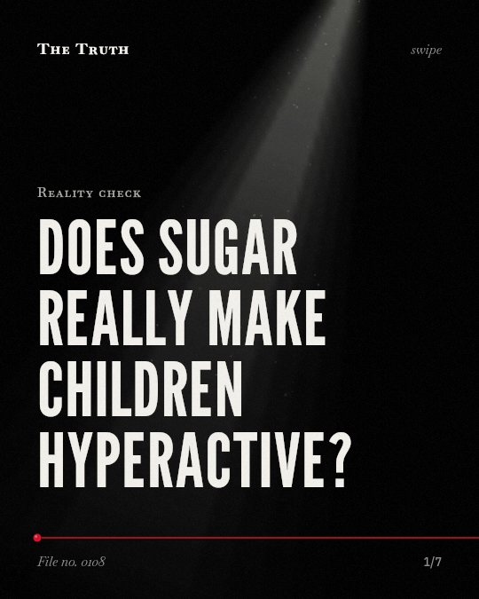

Reality check
Does sugar really make children hyperactive?

Ultra-processed foods impact cognition more than sugar.
While sugar does not affect behavior or cognitive performance in children, a combination of ultra-processed foods consistently shows the strongest negative effects across most cognitive domains.
Established. Several studies combined, or official data. The evidence backs this.
What the research found
A meta-analysis of 23 studies found that sugar does not affect the behavior or cognitive performance of children.
“The meta-analytic synthesis of the studies to date found that sugar does not affect the behavior or cognitive performance of children.”
Meta-analysis, 1995. Wolraich, JAMA.
The 95% confidence interval for all 14 mean effect sizes of sugar on behavior or cognition included 0.
“the 95% confidence interval for all 14 mean effect sizes included 0.”
Meta-analysis, 1995. Wolraich, JAMA.
Consumption of a combination of ultra-processed foods (food and drinks) consistently yielded the strongest negative mean effect sizes across most cognitive domains.
“Moreover, consumption of energy drinks, salty snacks, and a combination of UPFs (food and drinks) consistently yielded the strongest negative mean effect sizes across most cognitive domains”
Systematic review, 2025. Nguyen et al., Food Frontiers.
Increases in rumination (r = . 122) are associated with health risk behaviors like unhealthy eating.
“Further analyses indicated that increases in rumination, (r = . 122), but not reflection (r = -. 080, or worry, r = . 048) were associated with health risk behaviors.”
Meta-analysis, 2016. Clancy et al., Frontiers in Human Neuroscience.
For children 6 and younger, rewarding with verbal praise can be more effective in preventing unhealthy eating (r = - . 08, p < . 01).
“For children 6 and younger, rewarding with verbal praise can be more effective in promoting healthy eating (r = . 26, p < . 001) and in preventing unhealthy eating (r = - . 08, p < . 01).”
Meta-analysis, 2017. Yee et al., International Journal of Behavioral Nutrition and Physical Activity.
The sugar myth vs. ultra-processed reality.
A meta-analysis of 23 studies found no effect of sugar on child behavior or cognition. However, the combination of ultra-processed foods is linked to poorer cognitive performance.
The source of the issue is broader.
That may be why children struggle with focus. The problem is not just a single ingredient like sugar, but the complex profile of ultra-processed foods.
This part is our reading of the evidence, not a finding.
A lunchbox full of packaged snacks.
You watch a child eat a sandwich from a plastic wrap and a juice box, then wonder why they seem distracted during afternoon homework.
The honest summary
The evidence confirms that sugar does not affect children's behavior or cognition, though other ultra-processed foods may have negative cognitive effects.
The meta-analysis on sugar notes that a small effect of sugar or effects on subsets of children cannot be ruled out.
What else in your pantry is affecting their minds?
Sources
- Andrew Z. H. Yee, May O. Lwin, Shirley S. Ho (2017). The influence of parental practices on child promotive and preventive food consumption behaviors: a systematic review and meta-analysis. International Journal of Behavioral Nutrition and Physical Activity. Meta-analysis, cited 658 times.
- Mark L. Wolraich (1995). The effect of sugar on behavior or cognition in children. A meta-analysis. JAMA. Meta-analysis, cited 38 times.
- Faye Clancy, Andrew Prestwich, Lizzie Caperon et al. (2016). Perseverative Cognition and Health Behaviors: A Systematic Review and Meta-Analysis. Frontiers in Human Neuroscience. Meta-analysis, cited 110 times.
- Lan Nguyen, Jared Walters, Bernadette Spies et al. (2025). Food for Thought: A Systematic Review and Meta‐Analysis on the Effects of Ultra‐Processed Foods on Cognition in Children and Adolescents. Food Frontiers. Systematic review, cited 9 times.
Also read for this file, not quoted
- Hamilton et al. (2020). An extended theory of planned behavior for parent-for-child health behaviors: A meta-analysis..
- Akhondzadeh et al. (2004). Zinc sulfate as an adjunct to methylphenidate for the treatment of attention deficit hyperactivity disorder in children: A double blind and randomized trial [ISRCTN64132371].
This file was researched and drafted by software, then checked by rules a model cannot talk its way around: each quote above was matched word for word against the paper, and every number had to appear in it. How files are made.